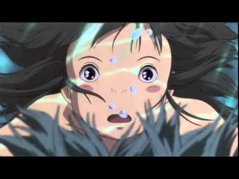

宮崎駿的介紹 霍爾的移動城堡 天空之城《神隱少女》其實是暗喻性產業的動畫電影
這應該是許多粉絲們最常聽到的其中一則傳說，而針對這一個傳聞，導演宮崎駿也給出了正面的回覆，
他表示：「以目前的常態來說，風俗產業大概是目前最受到爭議的議題之一。」
有一種說法是《神隱少女》其實是講述特種行業的性工作者的故事，而主角千尋在「湯屋」的工作是「湯女」，
則是影射在江戶時期接待並服務男性的性工作者。
《神隱少女》的「神隱」一詞背後的秘密
在日本，「神隱」（神隠し）的意思代表「被妖怪藏起來」，而這個現象最常發生在兒童身上，
在日本的傳統故事也常出現孩童被神怪抓走的傳說。《神隱少女》的日文原名為《千と千尋の神隠》，
原意可能為「少女的名字（千與千尋）被神隱起來」，而白龍也曾提醒過千尋：「不要忘記自己的名字，如果忘記了就找不到回家的路。」
以此來隱喻兒童被「神隱」後的狀態。
在千尋一家來到隧道前已經是瀕死狀態？
在《神隱少女》劇情的前半，千尋的父親在駕車時突然加速，接著受到引誘來到紅色隧道前面，
也讓千尋遭遇到許多不可思議的事件，有人猜測其實千尋一家是遭遇車禍事故，身體應該處於瀕死狀態，
因為在千尋來到神秘的城鎮時甚至出現了身體透明的現象。
千尋的雙親變成了豬？
還記得在《神隱少女》中因為吃了食物而變成豬的千尋雙親嗎？
很多人或許會很好奇為什麼選擇讓千尋的雙親變成豬，其實是因宮崎駿曾以舊友佐伯為《紅豬》主角波魯克為原型（波魯克也因詛咒變成豬），
而《神隱千尋》的女主角千尋的原型則是佐伯的十歲女兒，因此在電影中也沿用了現實生活中的親情關係。
「無臉男」在設定上的參考人物？
而在《神隱少女》中除了男主角白龍外，還有一位最受到議論的「無臉男」，
究竟宮崎駿設計這一位角色背後的意義又是甚麼呢？
其實「無臉男」的原型便是吉卜力工作室的動畫導演米林宏昌，而「無臉男」也暗喻著現代社會中的年輕人害怕寂寞，在現實中不斷需求慰藉、渴求著金錢和感情的現象。
為什麼在電車上的人都呈現黑色且半透明的狀態？
其實最大的原因就是在日本常有人搭乘電車到某處自殺的現象，
而在《神隱少女》中電車上的人們呈現出黑色半透明的狀態，代表著沒有生存意願和面對未來的希望，
但電車之所以只能直向前行，則是希望人們能夠打消自殺的念頭，回到自己的世界繼續生活。